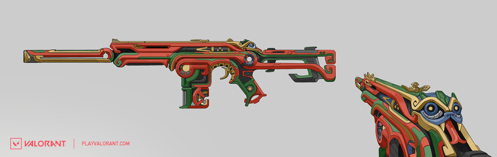
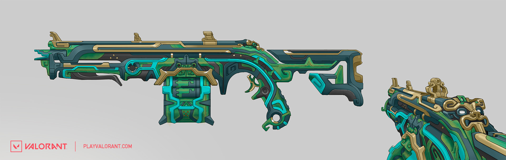

Hey there! My name is Raquel Garcia and I am a weapons artist on the VALORANT Premium Content team here at Riot.
I was given the opportunity to work on the Piedra del Sol skinline and I’m excited to talk about my process during this artistic journey.
Sammi Pedregon, Art Outsource Supervisor on VALORANT, will also join me!
BRINGING THE PAST TO NEW AGE GAMING
One thing that I enjoyed about working on this skinline was being able to dip my toes into some history and learn a lot more about the Aztec culture. I was assigned to create the Ghost weapon influenced by the Aztec god Xolotl.He was commonly depicted as a human skeleton with the head of a canine who guided the dead through the Aztec underworld known as Mictlan. I wanted to grasp an artistic feel for this gun that would represent him well and would also fit into today's modern gaming world.
(Concept Direction by Sean Bigham & Color by Sam Brown) After reviewing the initial concept, I felt that the face had more of a feline direction.
I wanted this to appear more dog-like as the deity is described.
After rounding the cheeks, squaring off the nose and introducing rounder ears, I was able to bring this design into a mutual representation of the original concept and Xolotl canine attributes with the intent of allowing players to question what type of animal this could be.
Thus completing the weapon design to fully immerse Xolotl for players to enjoy all over the world! Next, Sammi Pedregon will discuss the rest of the weapons in the skinline.
Hey there! I’m Sammi Pedregon, Art Outsource Supervisor on VALORANT, here to talk about the rest of the weapons for the Piedra del Sol skinline. I worked closely with Raquel, who brought the Ghost to life, to ensure that the rest of the weapons received the same attention in keeping with historical authenticity. As Raquel mentioned with the Ghost, each gun corresponds to an Aztec god. The Phantom represents Quetzalcoatl (Creation), Bucky is Huitzilopochtli (Sun and War), and the Judge is Tezcatlipoca (Night Sky). We worked closely with our Latin American office to decide on the faces for each gun and to find unique color palettes that best represent each weapon’s deity.


The Melee was based on the Aztec sun stone and a Macuahuitl, a historical Aztec wooden club with obsidian stones embedded as blades.